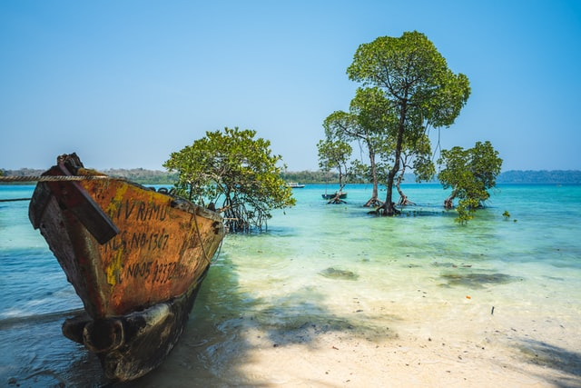

Heaven of island
By VIPUL PHULWANIHave you ever been to a place or country where you can experience almost everything, yes everything Whether it's daily street chaos or never-forgotten street food, where anyone on diet can’t deny eating delicious food in a restaurant or at someone’s home, where you have a wide range of cuisines, where you have six seasons, Where there is saying that every 100km food changes, language changes, culture changes.
Or just all you want is less crowded beaches or you want to devote yourself fully to this beautiful nature. Well this is not Mauritius or Malaysia nor Indonesia nor US nor Thailand, THIS IS INDIA.

If I ask you to name a place where you can experience oceanic life and no doubt beautiful beaches, it’s a 90% of chance that you will name goa. But if I ask you for the very less crowded beach with less or no network connection where smartphones and other gadgets are of no use and where you are in love with nature. Don’t know. Let me take you there.
WELCOME TO ANDAMAN AND NICOBAR ISLAND
Andaman and Nicobar Islands, also known as Kalapani is one of the most beautiful places you can visit in India.
They include a whooping 572 islands in total out of which only 50 are inhabited by people.
The islands have been the favorite tourist destination for a while now and offer one of the most out-of-world, exquisite vacation spots in India.
The weather here is moderate and doesn't follow the trends of India. When there is summer all over the mainland, Andamans just start out with monsoon and therefore offer perfect break from the harsh sun.
The glistening clean white sand beaches, wide shorelines and crystal blue waters offer a perfect place to take a dip or enjoy water sports throughout the day.
Destinations
- Havelock Island
- Port Blair
- Jolly Buoy
- North Bay
- Neil Island
- Ross Island
- Baratang
- Cinque Island
- Diglipur
- Red Skin Island
- Mayabunder
- Barren Island
Museums and Historical Attractions
- Cellular Jail
- Samudrika Museum
- Anthropological Museum
- Fisheries Museum
- Chatham Saw Mill
Water Sports
- Scuba Diving
- Sea Kart
- Parasailing
- Sea Walk
- Snorkeling
- Semi Submarine
- Glass Boats
- Jet Skiing
- Sofa Ride
- Banana Ride
- Game Fishing
- Kayaking